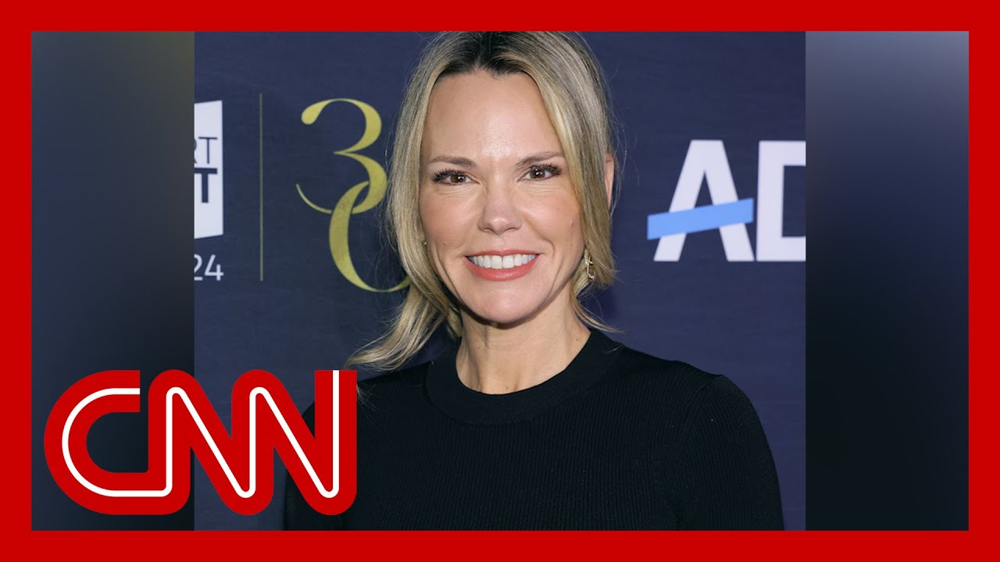

【CBS新闻主管温迪·麦克马洪在特朗普施压下离职】
Summary: The head of CBS News, Wendy McMahon, announced her departure amid pressure from Trump, as the network faces a $20 billion lawsuit and potential settlement talks, raising concerns about media independence.
摘要： CBS新闻主管温迪·麦克马洪宣布离职，正值该电视台面临特朗普的200亿美元诉讼及潜在和解谈判，引发对媒体独立性的担忧。

⏱️ Estimated Reading Time: 7 min
The head of CBS news, Wendy McMahon, announced this morning that she would leave the network.
CBS新闻主管温迪·麦克马洪今早宣布将离开该电视台。
In a statement, McMahon said, quote, it's become clear that the company and I do not agree on the path forward.
麦克马洪在一份声明中表示：“显然，公司与我在前进道路上存在分歧。”
It's time for me to move on and for this organization to move forward with new leadership.
现在是我离开、公司由新领导层带领前进的时候了。
Now this move comes one day after the season finale of 60 minutes, the network's marquee program.
这一变动发生在该电视台旗舰节目《60分钟》季终集播出后的第二天。
It's at the center of a $20 billion lawsuit filed by President Trump over an interview with Kamala Harris last fall.
该节目涉及特朗普总统因去年秋天对卡玛拉·哈里斯的采访提起的200亿美元诉讼。
CBS is parent company.
CBS的母公司是派拉蒙。
Paramount has been in talks to settle the suit ahead of a potential acquisition.
派拉蒙一直在谈判以和解此诉讼，为潜在收购做准备。
You got a little sneak preview there.
你刚才看到了一点预告。
Let's put it back on the screen.
让我们把画面切回屏幕。
Brian Stelter is here with me.
布莱恩·斯特尔特正在现场。
Brian, I know you've been doing reporting first and foremost on Wendy McMahon's departure, which is the news today.
布莱恩，我知道你首先报道了温迪·麦克马洪离职的消息，这是今天的新闻。
But what it means, as I mentioned, for the larger question of the real fight that CBS and the people that are having with the Trump administration administration, which has consequential ramifications for everybody in the news.
但正如我提到的，这对CBS及其员工与特朗普政府的斗争意味着什么，这对新闻行业的每个人都有重大影响。
Yeah, CBS is like Harvard.
是的，CBS就像哈佛。
It's like these big law firms.
就像那些大型律师事务所。
It's like other institutions that are under tremendous pressure from Trump and his administration.
就像其他受到特朗普及其政府巨大压力的机构。
Well, CBS fight or will CBS fold?
那么，CBS会抗争还是会屈服？
Well, the answer has actually been both.
实际上，答案是两者兼有。
We've seen journalists at CBS doing the work every day, every week put it on the news.
我们看到CBS的记者们每天都在工作，每周都在报道新闻。
We've seen the parent company executives try to fold, trying to settle with Trump.
我们看到母公司高管试图屈服，试图与特朗普和解。
We know settlement talks are underway.
我们知道和解谈判正在进行。
And this news today about McMahon suddenly resigning suggests that maybe a settlement is imminent.
而今天麦克马洪突然辞职的消息表明，和解可能即将到来。
As one CBS correspondent said to me earlier today, it feels like a purge is underway.
正如一位CBS记者今天早些时候对我说的，感觉正在进行一场清洗。
That's because last month, 60 minutes boss Bill Owens stepped down, citing a loss of independence.
这是因为上个月，《60分钟》负责人比尔·欧文斯以失去独立性为由辞职。
And now today, McMahon also stepping down.
而今天，麦克马洪也辞职了。
Now, there could be perfectly innocent reasons for this, unrelated to political pressure, but the pressure is the big story inside CBS right now.
当然，这可能与政治压力无关，但压力是目前CBS内部的主要话题。
Wendi McMahon had said to colleagues for a number of months that she would not apologize as a part of any settlement.
温迪·麦克马洪几个月来一直对同事表示，她不会作为和解的一部分道歉。
You'll recall that ABC did apologize to Trump when they settled a lawsuit Trump had filed back in December.
你可能记得，ABC在去年12月和解特朗普提起的诉讼时曾向他道歉。
McMahon and Owens said they would not apologize.
麦克马洪和欧文斯表示他们不会道歉。
McMahon said, that's a red line I will not cross.
麦克马洪说：“这是我不会跨越的红线。”
That's what she told people internally today.
这是她今天在内部对员工说的话。
She is stepping down, which maybe indicates that a settlement is imminent.
她的离职可能表明和解即将达成。
Of course, CBS is parent company Paramount Global.
当然，CBS的母公司是派拉蒙全球。
They're trying to get a merger approved by the Trump administration.
他们正试图让特朗普政府批准一项合并。
So this has all the appearances of a pay off by the parent company to get Trump administration approval.
因此，这看起来像是母公司为获得特朗普政府批准而进行的交易。
that's a pay off, is a big, is a big term.
“交易”是一个很重的词。
And and I know that you don't use it lightly, Brian.
我知道你不会轻易使用这个词，布莱恩。
And we're waiting to see what exactly happens.
我们正在等待具体会发生什么。
It does feel like we're on the cusp of something.
确实感觉我们正处于某个转折点。
And I mentioned coming into that this isn't just about CBS news.
我之前提到，这不仅关乎CBS新闻。
This is about right journalism writ large right now in this time.
这是关于当下整个新闻行业的重大问题。
Talk about that.
请谈谈这一点。
Yes.
是的。
Pressure under a billionaire owners like Shari Redstone, who controls Paramount, pressure on other media companies as well.
在控制派拉蒙的亿万富翁老板莎莉·雷石东的压力下，其他媒体公司也面临压力。
I mentioned that framing of fighting versus folding.
我提到了“抗争还是屈服”的框架。
I said, we're seeing it happen in real time at CBS.
我说，我们正在CBS实时看到这种情况。
We're seeing it in other places as well.
我们在其他地方也看到了这种情况。
And I think it's notable that when some outlets fold, when some institutions fold, others stand up stronger and start to fight.
我认为值得注意的是，当一些媒体屈服时，当一些机构屈服时，其他媒体会变得更强大并开始抗争。
In fact, we've seen startup news outlets start to be born out of this tumultuous time in the industry.
事实上，我们已经看到初创新闻媒体在这个行业的动荡时期诞生。
So it'll be very interesting to see what CBS ultimately does in this case.
因此，看看CBS最终会如何应对这一情况将非常有趣。
Shari Redstone might decide she has a lot of money at stake with this deal.
莎莉·雷石东可能会认为这笔交易涉及大量资金。
She has a lot of money to gain by getting her merger approved.
她可以通过合并获批获得大量资金。
She also has a lot of money she might lose.
她也可能损失大量资金。
If it's not approved, she might find it a corporate.
如果未获批准，她可能会从公司角度出发。
from a corporate point of view, to be the right thing to do, to settle with Trump, to make this lawsuit go away.
从公司角度来看，与特朗普和解、让诉讼消失是正确的做法。
But I remember we interviewed experts back on the day Trump sued CBS last October.
但我记得去年10月特朗普起诉CBS时，我们采访了专家。
They called the lawsuit frivolous.
他们称该诉讼毫无根据。
They called it ridiculous.
他们称其荒谬。
They called it junk.
他们称其为垃圾。
And those assessments still stand to be true today, even if the settlement does happen at Paramount dinner.
即使派拉蒙最终和解，这些评价今天仍然成立。
Yeah.
是的。
And we do all now see the full transcript.
我们现在都看到了完整的文字记录。
which probably feeds into the statements that you were getting, calling it frivolous and junk.
这可能支持了你得到的称其毫无根据和垃圾的说法。
thanks so much, Brian.
非常感谢，布莱恩。
Thanks for that reporting.
感谢你的报道。
Always good to see you.
很高兴见到你。